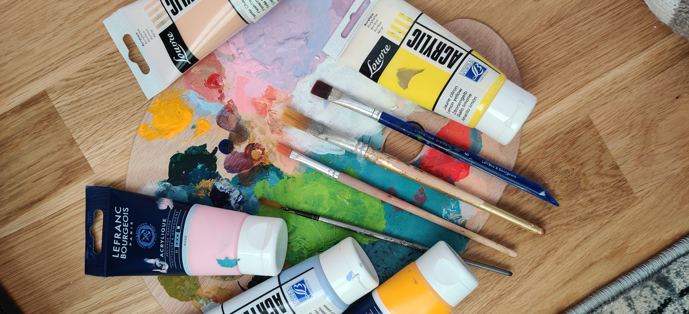

Under covid-19-pandemin har det blivit mindre arbete för alla, men kulturbranschen har möjligtvis drabbats hårdast. Helsingforsbaserade konstnären Sebastian Björkman har dock landat på fötterna.
Innan pandemin slog till i Finland jobbade Sebastian Björkman aktivt som frilansande grafisk formgivare och utanför arbetstiden målade han beställningsarbeten samt ett och annat personligt projekt. Sedan slog pandemin till, allting stängde, beställningar backades på grund av evenemang som nu inte hade möjlighet att hållas, och Björkman (29) plötsligt så gott som arbetslös.
Sebastian Björkman
Men efter den initiala paniken, när butikshyllor tömdes och människor panikköpte toalettpapper, kom Björkman på en idé som har hållit honom sysselsatt sedan dess: en konstutställning direkt baserad på covid-19. – Det kändes mitt i allt så självklart”, konstaterar Björkman, Väldigt få hade blivit sjuka i Finland, men så fort det börjades diskuteras om nedstängning av delar av samhället så kröp den där starka rädslan fram. Den rädslan är vad som inspirerade honom att börja undersöka andra koncept i Nordens historia som har framkallat likadana känslor, och han landade till sist på 15 stycken fornnordiska väsen. Från bergakungen till en myling, eller som Björkman själv kallar den sistnämnde: – Sist och slutligen är det ju en zombiebebis.
Ett exempel på hur en myling kan se ut inom nordisk folktro.
Underliga material
Som en konstnär som tycker om att arbeta med händerna, vilket man kan se i de 70 färggranna fågelholkar han har satt upp runt om i Helsingfors centrum, men som också tycker om att arbeta med underliga material, så bestämde sig Björkman snabbt att det inte bara skulle vara målningar. – Jag har varit vid Tölöviken och rivit upp vass och på grusplaner och sökt efter passligt stora stenar, som jag sedan har slipat så att de blänker, skrattar han, jag tänkte att det var en bra idé att använda material från naturen när det nu handlar om naturväsen, och trots ett otroligt tungt arbete så tror jag att jag har lyckats.
Ett gott råd har han dock åt konstnärer som vill göra något liknande: – Att jobba med vass är opraktiskt på alla sätt och troligen det svåraste jag någonsin har gjort. Jag tänker aldrig mera jobba med vass. Efter en kort paus ler han och säger skrattande att han definitivt kommer att jobba med vass igen.
Post-coronakonst
Utställningen, som heter Obscura, ska vara post-coronakonst och skall därmed inte hållas förrän pandemin åtminstone har lugnat ner sig så mycket att samhället känns normalt. – Jag vill att människor ska kunna reflektera över hur ens känsloliv egentligen var under covid-19-pandemin, och inte bara se det som en påminnelse om omvärlden.
Kristian Nordgren
Vi kan inte vara ensamma i universum
Sedan tidernas början har människorna på jorden spekulerat om den oändliga rymden, dess hemligheter och de många obesvarade frågor som har uppstått under åren. Är vi ensamma i rymden eller ej? Om inte, varför har vi inte hittat tecken på intelligent liv än?
Osäkra observationer av utomjordingar och ufon (Unidentified flying object) har gjorts redan i många hundra år, men spekulationer och teorier om dem har alltid funnits. Då människan inte kände till teknologi och vetenskap, kunde observationerna på ufon vara något gudomligt och ibland blev de till och med symboler för religioner.
Under 1950-talet talade man mycket om ”flygande tefat”, en maskin som vissa trodde att innehöll utomjordingar. Beskrivningarna varierar över tid, men hur ufon flyger har alltid varit en obesvarad fråga, då aerodynamiken inte har stämt överens med tidens teknik. Något att lägga märke till är att observationerna på ufon oftast reflekterade den teknologi som var bekant då observationen gjordes: på 1900-talet beskrev man observationerna som flygplanslika, då man i vissa fall kan konstatera att ufon egentligen bara är en produkt av människans fantasi.
Ufon i Finland
I Finland gör man ungefär 200 ufo-observationer om året, mest i Tammerfors, Uleåborg och huvudstadsregionen. Nordost om Uleåborg ligger staden Pudasjärvi, där man gjorde tiotals ufo-observationer mellan åren 1967 och 1971, efter det har observationerna minskat, och mellan år 2006 och 2013 gjordes bara fyra observationer på orten. Det är logiskt att där det finns mycket människor, finns det också flest perceptioner, men Pudasjärvi skiljer sig från de andra städerna, då observationerna kom också från de mindre orterna på landsbygden, oftast då någon varit ute på en kvällstobak och sett upp mot himlen.
Observationerna anmäls för det mesta till Suomen Ufotutkijat – en hobbyförening som grundades år 1974. I artikeln ”Ufoja nähdään nyt enemmän kuin koskaan – ”Vierailijat tulevat erilaisilta planeetoilta tai dimensioista” av Jukka Vuorio (2020) berättar föreningens ordförande Heikki Kulju att mängden observationer har vuxit under de senaste åren, men han tror att det bara är toppen av isberget.
Den obesvarade frågan: Är vi ensamma?
Enligt den filosofie doktor Jaakko Närvä beror det stora intresset för livet utanför jorden på den kosmiska ensamheten, ”Vad om vi är ensamma i universum?”. Det är mycket sannolikt att vi inte är ensamma, men varför har vi inte bevis för liv utanför jorden? Den största delen är bara teorier, som till exempel de många planeterna i stjärnsystemet Trappist 1 med liknande förhållanden som jorden. Kan de innehålla liv? Det är inte omöjligt, tycker forskarna.
I en nyare forskning som publicerades den 14 september 2020 berättades om liv på Venus. Forskarna har hittat fosfin i moln som täcker planeten och den enda förklaringen till den kemiska föreningen i molnen är enkla former av liv, som till exempel mikrober. Ytan på Venus är dock mycket grym. Temperaturen på ytan är ungefär 450°C och det regnar svavelsyra. Inte det bästa förhållandet för något sorts liv…
Det finns liv också i jordens atmosfär och moln, vilket kunde vara ett tecken på att Venus för länge sedan varit en planet som haft lämpliga förhållanden för liv, liksom planeten Mars, där det har hittats is och spår av rinnande vatten.
Planeten Saturnus har månen ”Titan” där organiska föreningar har hittats, också Jupiters månar har spekulerats att ha tecken på enkla former av liv, men när kommer vi att hitta intelligent liv? Liv man kan kommunicera med?
Frågan om säkerhet: Är utomjordingar ett hot?
Då många spekulerar om det finns liv utanför jorden, grubblar andra på de stora riskerna med att försöka kommunicera med utomjordingar, det gjorde till exempel astrofysikern Stephen Hawking. År 1977 skickades två grammofonskivor ut i rymden på NASA:s två rymdsonder Voyager 1 och 2. Skivorna är riktade till allt liv utanför jorden eller möjligen för framtidens människa, och innehåller bilder och ljud om livet på jorden och dess kulturer. Dessutom innehåller de också bruksanvisningar för skivan och koordinaterna för jorden… Vad sker om någon hittar vår planet? Det skulle vara intressant att få svar på frågan vi funderat så länge på, men hur skulle det påverka oss?
I dokumentären Into the Universe with Stephen Hawking berättar astrofysikern om faror som kan åstadkommas av utomjordingar som hittar till jorden. ”Att träffa en intelligent varelse kan vara mycket lika som för ursprungsfolket som träffade Columbus, vilket inte slutade så bra”, konstaterade han.
Finns det andra möjligheter?
Fastän den nutida teknologin hindrar människan att resa till andra stjärnsystem, kan det kännas lättare att locka utomjordingarna hit istället, om de skulle råka ha mer avancerad teknik för att resa genom rymden. Det betyder dock inte att det är en bra idé, inte ännu i alla fall. Med mycket stor chans hittar människan liv någonstans i rymden inom de nästa 50 åren. Man kunde också påstå att vår planet redan har fått besök av utomjordingar om man ser på mängden observationer av ufon på hela jorden.
Kanske det är en bra idé att inte försöka locka utomjordingar till vår planet, kanske det finns andra alternativ?
Saara Numelin
Många bollar i luften och idépromenader för skapandet
Hemma hos serietecknaren Nils Qvis föds ständigt nya idéer. Foto: Rebecka Nylund
Serietecknaren Nils Qvis ritar illustration på illustration, serie efter serie, han designar spel efter spel. På sin Instagram (@qvisas) och i sin onlineportfolio delar han med sig av sina alster. Det är knappast någon besökare där som får intrycket av att idéer skulle vara en bristvara för Nils.
Hans arbeten är varierande i tema; ibland nästan barnsliga, men samtidigt med inslag av något som kunde tolkas som samhällskritik och ironi. Hans linjerna är säkra och tydliga, formerna, detaljerna och bildkompositionerna skapar tillsammans med skuggningar och varsamt utvalda färger små universum i vart verk.
Hur och varifrån får Nils idéer till sina arbeten? Och hur kommer det sig att han lyckas producera sådana mängder med otroliga verk?
Det börjar med ett streck
En blyg februarisol lyser upp köksbordet hemma hos Nils och hans fru på Busholmen i Helsingfors. En av väggarna i den ljusa lägenheten är fylld, nästan tapetserad, med ett av Nils pågående arbeten; en följetongsserie om universums uppkomst.
– Jag använder improvisation väldigt mycket då jag skapar. Det kan ofta vara det att jag börjar med att dra något hastigt streck eller någon krumelur och sedan så stirrar jag på det och så funderar jag “Vad ser det här ut som? Vad skulle det här kunna vara?”.
I serien om universums uppkomst förklaras big bang och hur allt fick sin början genom en berättares genomsyrande perspektiv. Seriens berättare har fått en lite snedvriden bild av vad vetenskapen kommit fram till, förklarar Nils, och han använder sig bland annat av liknelser med pizzadegar och pastasorter för att förklara olika beståndsdelar i universum.
Nils jobbar med papper och penna, såväl som digitalt, när han skapar. Foto: Rebecka Nylund
Producera, producera, producera
Nils går fram till sin bokhylla och tar fram några av de sällskapsspel han har gjort. Här hittas både kortspel och bordsspel, färdiga produkter och prototyper som ännu kräver lite arbete. Här finns också sådana spel som faktiskt bokstavligen lagts på hyllan: projekt där det helt enkelt bara har sagt stopp och arbetet har stannat av. En del av spelen började som projekt knutna till hans studier i visuell kommunikation och design vid Aalto-universitetet.
– Då det kommer till projekt så… Man måste ha den där kvantiteten för att få någon kvalitet överhuvudtaget. Man måste bara göra mycket, för att ens någonting ska fastna. Du kan inte ha en bra idé direkt. Du kan inte ha ett bra verk på gång, utan man måste hålla på med flera saker parallellt. Man måste bara inse att de flesta sakerna kommer att skita sig, men om du har tillräckligt många saker på gång så kommer någon av dem kanske att lyckas.
Spelen i bokhyllan blandas med skissblock och papper fyllda med text till seriestrippar, här finns sånghäften som Nils designat och tidningar vars pärmbilder han illustrerat. Han håller sig onekligen aktiv och producerar verk på löpande band. Men hur? Varifrån får han sina idéer att börja experimentera med och utveckla? Hur gör han sina streck och krumelurer tillräckligt intressanta för att han ska känna motivation till att alls fundera vidare på deras potential?
Att hämta inspiration
Att gå ut på en promenad för att få intryck och nya idéer är ett av Nils bästa tips. Foto: Rebecka Nylund
Nils blickar ut genom fönstret mot en av lyftkranarna vid höghusbygget mitt emot, där de är i full gång med att lyfta in ett stort fläktsystem.
– En grej som är väldigt viktig för mig för inspiration är att gå ut på en bra promenad. Det finns två viktiga orsaker till varför en promenad är väldigt bra för en. Till att börja med så ger det en riktigt bra paus. Man får helt enkelt göra ingenting, man har en bra ursäkt för att göra ingenting! Man bara går och sen kan det här som snurrar i hjärnan, som är ens undermedvetna, som ibland ploppar upp i ens medvetna – det kommer riktigt igång, så att man får slappna av och inte bry sig om någonting annat än att bara gå. Och därifrån kommer det ofta väldigt bra inspiration.
– Det här andra är ju förstås, speciellt om man är ute och går i naturen mycket, så där finns det en massa intressanta saker att se på. Och alla idéer så kommer ju från någonting som man har upplevt på något sätt. Det är antingen någonting som man har lärt sig eller någonting som man bara har sett eller varit med om.
På inspirationspromenad
Sagt och gjort - vi besluter oss för att gå ut på en promenad och bara låta benen gå, lyssna på snön som knastrar under skorna, ge huvudet tillåtelse att få tänka fritt en stund och ta in allt vi ser. Nils förklarar att han brukar fotografera intressanta saker han observerar där ute. Han samlar även på olika filmklipp och ljud som kan komma att fungera som inspiration för en karaktär eller en handling till en serie eller ett spel. Vi stannar till och beskådar en gammal stenmur kring en gravgård, passerar en kaklad vägtunnel, vi lyssnar på resonansen då vi trummar på ihåliga trädstammar och hittar bortkastade trafikskyltar vid en strandkant.
– Ju flera sinnesintryck man får, desto bättre och fler idéer får man, säger Nils. Därför är det viktigt att gå omkring och kanske kolla lite extra på den där mossan på någon bark eller se vad det är för några maneter som lurar i vattenbrynet.
Det är viktigt att stanna upp och dokumentera material som senare kan fungera som språngbräda i en skapandeprocess. Foto: Rebecka Nylund
Rebecka Nylund
Testpålningsarbetet påbörjat för spårvagnsrutten Fiskehamnen-Böle
"Test pålningsarbetet bredvid Hermanstads strandväg i förgrunden, medan i bakgrunden syns Fiskehamnens skyskraporna."
Förra veckan påbörjade test pålningsarbetet för den nya spårvagnsrutten mellan Fiskehamnen och Böle på nio olika ställen bredvid Hermanstads strandväg mellan Gamla vintervägen och Tavastvägen.
Tidtabell och syftet
Arbetet kommer att vara klart i juni. Arbetet pågår vardagar från klockan 7 till 18 och kommer att ske på östra sidan av Hermanstads strandväg.
Syftet för testpålningsarbetet är att kunna avgöra vilka sorts pålar som ska användas för det huvudsakliga byggarbetet och vilka kostnader det medför. Detta kan variera på basen av hurudan jordmån sträckan har. Valet av påltyp kan också påverka koldioxidutsläpp och minska buller från byggarbetet.
När det huvudsakliga byggarbetet för spårvagnslinjen kommer att börja är oklart, på grund av att projektet ännu är i planerings- och utvecklingsfasen. Men den förutbestämda tiden när spårvagnslinjen kommer att vara klar är hösten 2024.
"Spårvagnsrutten kommer att gå genom Vallgårdsdalen mellan Gumtäkt botaniska trädgård och Vallgårds koloniträdgård."
Förbindelser och dess märkvärdighet
Spårvagnsavsnittet kommer att bestå av förbindelser mellan Knekten, Fiskehamnens centrum, Vallgårdsdalen, och Böle. Vid sidan av spårvagnslinjen kommer det också att byggas grönremsor, gång- och cykelleder.
Enligt stadens uppskattningar kommer Fiskehamnen att bebos av cirka 25 000 personer och 10 000 arbetsplatser kommer att befinna sig där år 2040. Därför anses projektet vara värt att utföra.
Kalle Ranta
Malin Moilanen ”Konsten är ett hem för mig”
I en diskussion med Emma Reijonen berättar den finlandssvenska konstnären Malin Moilanen om sin konst, sin efterlängtade nätbutik och vem det är som får kalla sig konstnär i dagens Finland.
Malin Moilanen är i färd med att öppna sin nätbutik. Foto: Malin Moilanen
Malin Moilanen ler stort då hon ansluter till videosamtalet. Hon har nyss slutat jobbet för dagen och sitter i sin bil på parkeringsplatsen. Moilanen är en Lojobaserad konstnär med långa rötter i skapandet. Trots att hon ända sedan barnsben har ritat mycket och fått beröm för den konst hon skapat, var det först i högstadiet som hon började tänka mer seriöst på det och öva på att bli bättre.
– Konsten har blivit en så stor del av mig och min vardag att jag inte kan se mig själv utan skapandet. Moilanen berättar att hon har svårt att prata om sina känslor och hålla fast vid sin tankegång. Hon glömmer lätt vad hon ska säga och dagdrömmer ofta. – Därför är konsten för mig en trygg plats, den är ett hem för mig. Min favoritsstund är då jag sätter mig ner och får måla.
Människan bakom målningarna
För två år sedan blev hon utexaminerad från gymnasiet och har sedan dess jobbat och skapat konstverk. Just nu jobbar hon på ett apotek och väntar på svar från högskolor hon sökt till. Hon hoppas på att få börja studera grafisk design i höst. Förutom konsten hon skapar för sig själv, är hon illustratör för nättidningen TOVE.
På sin fritid gillar Moilanen att lyssna på poddar och ASMR, meditera, yoga, brevväxla samt se på skräckfilmer och -serier. Hennes intresse för skräck syntes förut väldigt starkt i hennes konst genom häxringar, häxor, spöken och mörka färger i hennes illustrationer. Under det senaste året har Moilanens konst dock utvecklats från mörkare färger och lätt kusliga motiv till färggladare och mjukare verk. Hon vet inte själv varför förändringen skett. Hon illustrerar mycket kroppar och natur och håller även på med typografi. Till konstverken använder hon sig av akrylfärger, färgpennor, blyertspennor samt nuförtiden även sin iPad, då hon skapar mycket digitalt.
– Idéer kommer oftast till mig så att det bara klickar till och jag ser framför mig vad jag ska rita. Men i processen ändras bilden av den färdiga produkten oftast och jag hittar rätt.
Apropå det digitala, är Moilanen väldigt aktiv på sociala medier. Hon försöker publicera tre gånger i veckan på sin Instagram och använder även TikTok.
– Ibland blir jag så inne i instagramvärlden att jag känner att jag måste publicera någonting. Jag försöker att publicera tre gånger i veckan, men jag skapar ju inte konst för att publicera, utan för att jag tycker om det och för att jag behöver uttrycka mina känslor. Trots det kommer jag ibland på mig själv av att tänka att jag snabbt måste skapa något och publicera det.
Moilanen målar mycket kvinnokroppar. Illustration: Malin Moilanen
Känner du att du har hittat din egen stil?
– Tidigare trodde jag att jag har hittat min stil, men nu känner jag att jag inte liksom vill bara göra en viss grej utan jag vill prova på olika grejer. Trots att min stil utvecklas och ändras hela tiden, tror jag att då man kollar på min konst, märker man på vissa detaljer att det är jag som skapat den.
Har du andra konstrelaterade projekt du skulle villa göra eller redan håller på med?
– Jag har alltid velat provat på skulptur! Beställningsarbeten är något jag skulle vilja göra mera av. Jag gjorde förra året en och ska göra ytterligare en till sommaren. Det är svårt, för kunden vill ofta ha något väldigt specifikt, och jag känner ibland att det inte är helt min stil. Inom min egen karriär drömmer jag om att kunna leva på min konst.
Moilanen nämner också att hon just nu även håller på med en målning som är totalt olik de hon vanligtvis målar. Hon har experimenterat mycket, njutit av processen och enbart målat med färger och former som känns bra. Istället för att fokusera på hur målningen ser ut, har hon försökt känna hurdana drag känns bra. En bit ifrån kan den se rätt kaotisk ut, men den har en massa små detaljer man märker då man går nära - lite som motsatsen till the cheerleader effect. Målningen är den största hon hittills gjort och kommer förmodligen kallas Wishing upon a falling star.
Det halvfärdiga konstverket Wishing upon a falling star. Foto: Malin Moilanen
En långvarig dröm blir sann
Just nu är Moilanen i full färd med att öppna sin nätbutik, Månvinda Creative. Namnet kommer från en blomma som enbart blommar under natten.
– Jag ville föra tillsammans min kärlek för naturen och för astrologi, stjärnor och månen och så.
Hon planerar att öppna butiken i juni på Etsy. Om det går bra vill hon i något skede flytta över den till en egen domän. Först kommer hon enbart att sälja självprintade printer. Moilanen har i över fem år funderat på att en dag öppna sin egen nätbutik. Varför just nu.
– Jag har drömt om det jättelänge, och bestämde mig nu för att inte bara drömma om det, utan göra något åt saken. Det svåraste med nätbutiken hittills har varit allt nytt jag varit tvungen att ta reda på. Priser på frakt inom landet och utomlands, tullavgifter, att eventuellt starta en egen firma, skatter och bokföring och så vidare.
Vem får klassas som konstnär?
På sistone har det skrivits en del i media om vem som får kalla sig själv för konstnär och vad som får klassas för konst. Nuförtiden är konsten i alla dess former tillgängligare för vem som helst jämfört med hur det såg ut för bara 50 år sedan. Samtidigt som det är lättare att dela med sig av sin konst tack vare digitaliseringen, är det också lättare att bli en i mängden, att inte sticka ut. Hur upplevs konsten i Finland idag?
Moilanen anser att ämnet delar starka åsikter. Hon känner att många är väldigt kritiska mot vem som får kalla sig konstnär och tycker själv inte att man måste vara utbildad för att klassas som en “riktig” konstnär.
– Det är samma som du nämnde med fotograferandet. Alla kan fota, alla kan måla, men inte tycker jag ju ändå att är fotografer eller målare för det. Konst finns överallt. Vi behöver konstnärer. Alla förstår inte att nästan allt vi ser är konst. I kommentarsfältet till en artikel jag läste om ämnet, skrev människor att folk ska skaffa sig ordentliga jobb, att inte bara försöka leva på sin konst.

Moilanen har målat ända sedan hon var ung. Foto: Malin Moilanen
Uppmuntran versus kritik
Hon berättar att hon ofta inte gillar att berätta för människor att hon vill vara konstnär och kunna klara sig på sin konst. Vissa människor blir taggade då hon berättar det för dem och tycker att det är en fin grej, medan vissa genast säger att hon inte kan klara sig i Finland som konstnär. Att det inte lönar sig. Senast fick hon höra det på sin arbetsplats.
– Men ändå kommer samma människor som inte tycker att jag ska vara konstnär fram till mig och ber mig om att rita eller måla något till någonting - ibland förväntandes att jag ska göra det gratis. De kanske inte själva förstår hur mycket vi behöver konst i allt vi gör. Webbsidor, reklamer, fotografi och all annan design är konst.
Inspiration och fortsättning
Då jag frågar Moilanen om vem och vad hon inspireras av, radar hon upp en lång på nutida och dåtida konstnärer - Hugo Grenville, Ulla Thynell, Michelle Avery Konczyk, Alexandra Dvornikova, Tove Jansson, Helene Schjerfbeck, Henri Matisse och Audra Auclair för att nämna några. Hon drar också mycket inspiration från Studio Ghiblis filmer, tv-serien Hilda, filmerna från produktionsbolaget A24, Rider Waite-tarotkort, Edith Södergrans dikter samt claymation.
Nu har Moilanen framför sig öppnandet av sin nätbutik. Hon jobbar målmedvetet framåt och drömmer stort. Att få se en sådan iver och kärlek för skapandet som hon besitter är verkligen inspirerande för andra unga skapare. Kanske kommer hennes namn nämnas en dag då en ung konstnär blir tillfrågad om vem som är hens inspiratörer. Ett namn att minnas.
Emma Reijonen
Sebastian Björkman jobbar med konst och med företag
Hur ser kontrasten mellan fri konst och beställningsarbeten åt företag ut? Sebastian Björkman jobbar med båda och vi diskuterar här problemställningen.
Vad har du för grunder som har lett dig till att jobba inom grafisk formgivning?
– Jag läste grafisk design som biämne då när jag studerade textil på gamla ”Taikken” och blev och mer intresserad av det och nu så jobbar jag med det.
Vad är viktigt att tänka på när man gör beställningsjobb åt olika kunder?
– När man jobbar med kunder jobbar man för dem och måste ta hänsyn till deras mål och vad de vill ha, och sen är det en del av mitt yrke att ifall jag har en bättre och mer vettig vision försöka sälja den åt kunden.
– Jag gillar den delen av grafisk design där du har olika ingredienser och sen ska du göra någonting. Kanske kundens vision är någonting helt annat än slutprodukten men då är det lite som att övertala och kunna förklara varför din egen idé är bättre och varför.
När målade du ditt första stora verk?
– Min första stora tavla målade jag på åttan eller nians skolavslutning. Jag målade Musse Pigg som hade fastnat med sitt huvud i en råttfälla.
Hur kommer då den fria konsten in i bilden?
– Under de senaste åren har jag blivit mer intresserad av konstprojekt i olika former och färger. Grafisk design och att jobba på byrå känns ganska stramt och smalt, jag vill ha mer.
Sebastian i sin studio.
Hur har coronapandemin påverkat ditt arbete?
– På grund av coronan har jag börjat jobba på en stor utställning. Den är direkt inspirerad av tankevärlden och känslan som coronan har fört med sig. Jag tror att covid-19 är mycket mer än demonstrationer, ansiktmasker och toapappersbrist i butiken – jag tror att det finns någonting mycket djupare, som vi eventuellt ännu inte har förstått. Utställningen är post-corona konst så att tittaren kan reflektere över hur hens känsloliv fungerade under coronatiden.
Anser du att du avspeglar dig själv genom din konst?
– I och med att jag lyssnar mest på punk och metallmusik i alla dess former och färger så avspeglar det sig nog på vissa intressen som jag har, vilket man sedan kan se i min konst. Där finns ställningstagande grejer och ganska morbida och dystrare ämnen som jag bollar med.
Sebastian i full gång med ett av sina verk.
David Schmedes Biaudet
Linnea Lindgård är tacksam över att arbeta för de ungas välmående
-Arbetsannonsen verkade för bra för att vara sann, ibland har man verkligen tur. Då Linnea Lindgård utexaminerades från Helsingfors universitet under coronapandemin misstänkte hon att arbetsmöjligheterna inte skulle vara många, men strax efter magisterexamen började arbetet som projektkoordinator vid sektorn för fostran och utbildning.
Linnea Lindgård arbetar som projektkoordinator för Finlandsmodellen i Helsingfors.
Linnea Lindgård sitter hemma vid sitt arbetsbord, datorns e-post plingar stundvis till och runt henne finns gula notislappar samt ett större anteckningsblock.
- Det var verkligen intressant att börja arbetet helt online, eller, vissa onsdagar träffas vi på riktigt!
Finlandsmodellen för hobbyverksamhet är ett pilotprojekt som finansieras av undervisnings- och kulturministeriet. Syftet med pilotprojektet är att öka barn och ungas välmående genom att erbjuda avgiftsfria hobbyer i grundskolor för elever i årskurs 3-9. I Helsingfors, där Linnea arbetar som projektkoordinator är målet att det ska finnas hobbyverksamhet i alla av regionens grundskolor vid årsskiftet. Tanken är också att Finlandsmodellen efter pilotskedet ska bli en permanent verksamhetsform. Barnen och ungdomarna har själva, genom enkätundersökningar lyft fram sina önskemål.
- Det är viktigt för oss att verksamheten motsvarar barnens önskemål. Det handlar inte heller bara om idrott utan kan vara allt från konst till programmering. Till exempel så sattes några djurklubbar nyligen igång, säger Lindgård med ett stort leende.
Ett överskridande arbete
Lindgård är själv ansvarig för idrottshobbyerna och den svenska sidan av pilotprojektet i Helsingfors. Av 137 sökande var hon en av två som anställdes.
- Totalt är vi tre koordinatorer, alla ansvarar för sina egna skol- och matrisområden. Och så har vi Irma Sippola, projektchefen som hjälper oss, och hela projektet att framskrida enligt plan.
I Helsingfors har pilotprojektet samarbeten i samhällets alla sektorer och är man koordinator som Linnea Lindgård gäller det att vara spindeln i nätet.
En bakgrund inom idrott
Innan koordinatorarbetet studerade Lindgård vuxenpedagogik vid Helsingfors universitet. Under studietiden drev hon även ett idrottsföretag tillsammans med en vän och har själv en lång bakgrund inom både balett och thaiboxning.
- Då jag sökte arbetet tänkte jag att jag var för ung och oerfaren. Å andra sidan är jag tävlingsinriktad och så brinner jag förstås för de ungas välmående. Tydligen tyckte de att min bakgrund passade bra in och jag har blivit mer än väl mottagen av mina erfarna kolleger!
För en bättre framtid
Pilotprojektet vill betona trygghet och gemenskap. Genom en hobby kan barn och unga skapa nya relationer och känna sig sedda, främja empati och stödja nya kompisrelationer. Det står även klart att alla barns och ungas välmående är lika viktigt oavsett socioekonomisk bakgrund. Lindgård tror att det är speciellt viktigt att projektet kommer igång just nu.
- En stor andel av barn i Helsingfors känner sig ensamma och coronapandemin har inte direkt förbättrat situationen. Då man arbetar med ett projekt som detta ser man dock ljuset i slutet av tunneln och får hopp om framtiden. Det känns bra att arbeta med målsättningar som främjar välmående och minskar ensamhet. Samtidigt så resulterar ju projektet i ytterligare chanser till arbete för personer som arbetar kring idrott och kultur, konstaterar hon.
Lindgård påpekar även att det stundvis har varit tufft att både arbeta och leva privat hemma, men också att hon är väldigt tacksam över att ha fått en tjänst i tider då många kompetenta vänner är arbetslösa.
- Jag tror och hoppas att situationen snart blir bättre också för oss äldre. Precis som de unga behöver vi social gemenskap, många har det tufft just nu, säger Lindgård, samtidigt som det är dags att hoppa in i nästa zoom-möte.
För mera information om Finlandsmodellen i Helsingfors kan du besöka Helsingfors stads webbplats.
Fakta om Finlandsmodellen i Helsingfors:
Projektet är beviljat 1 miljon euro av Undervisnings- och kulturministeriet. I Helsingfors finns 102 grundskolor som drivs av staden och 33 322 elever i årskurs 3-9. I Helsingfors stads strategi är ett av målen att alla barn och unga ska ha en hobby. Konkurrensutsättning av samarbetspartner är fortfarande öppen.
Sviken men hoppfull Rita Vargas kämpar för rättvisan genom sin konst
Rita Vargas har bott i Finland i 11 år och har en tryckstudio i Helsingfors. Hon arbetar med alla sorters tryck och arrangerar även kurser för den som vill lära sig mer om konsten.
– Det är ett medium jag är mycket passionerad för, säger den bubbliga konstnären. Hennes studio är utrustad för alla tänkbara ändamål.
I Ritas studio finns utrustning och material för att blanda mycket speciella färger och bläck.
Vargas Print Studio
Rita arbetar varje dag i sin studio i ett garageutrymme i Vallgård. Utifrån ser det ut som vilket garage som helst, men när man stiger in slås ens luktsinne av en kombination av lavendel och terpentin. Rita använder sig av en doftdiffusor för att maskera den starka lukten av ämnena man använder. I studion skapar hon sin egen konst, men erbjuder även trycktjänster och kurser åt utomstående. Hon flyttade till Helsingfors från Jyväskylä år 2019.
– Det är något som jag kan dela med mig av, mina kunskaper som jag har samlat i över 20 år, säger hon stolt. Kurserna erbjuds åt både erfarna tryckkonstnärer och nybörjare.
Plagiat och idéstöld
Efter att hon flyttat till Finland har Rita stött på obehagliga situationer inom konstvärlden. Detta har gjort henne försiktig med främlingar som ställer för många frågor, men när hon väl öppnar upp är hon vänlig och pratsam.
– Jag har haft en del svåra situationer där jag har lärt känna lokala människor som har ställt mig många frågor, säger Rita dystert. Hon var ursprungligen tveksam över att gå med på att intervjuas, eftersom dessa människor även presenterat sig som studerande.
– Jag har öppnat mig för dem, för att jag är naiv och fortfarande har mycket att lära mig, och jag har berättat för dem om idéer jag har, och så har de här människorna tagit mina dem och fått pengar för dem.
Hon upplever att som kvinna och utlänning har hon en svårare position inom den finländska konstvärlden.
– Det tycker jag är irriterande. Att de bara tar någon annans idéer för sitt eget intresse och får finansiering för det och jag blir kvar med ingenting.
Från motgångar till inspiration
Rita har dock inte låtit sig slås ned av dessa händelser. Hon fortsätter kämpa för det hon tror på och älskar.
– Jag tror de svåraste ögonblicken är min största inspiration. Det är dem jag lär mig mest av, säger Rita med en glimt av hopp i blicken. Hon ser upp mot trycken som torkar längs väggen. Rita är en ensam mamma, så hon uppskattar att kunna arbeta i fred och uttrycka sig genom konsten.
– Jag kan dela med mig av min syn på medkänsla, kärlek, jämlikhet, kön, och svårare tider, med hjälp av trycket på ett sätt som jag inte skulle kunna göra om jag skrev akademiska texter, vilket jag tidigare har gjort.
Rita är öppen och vänlig, och njuter av att se andra konstnärer blomstra i hennes studio.
– Det är riktigt mäktiga människor som kommer in genom den där dörren och gör en revolution här inne. Det är en stor inspiration, såna människor som kommer hit med bra energi.
Ända sedan barndomen har Belén Weckström varit intresserad av att skriva. Nu jobbar hon som journalist på svenska YLE.
– Det började med mitt intresse för böcker, speciellt Harry Potter-böckerna. Jag började skriva mina egna historier och då fattade jag tycke för att skriva. Min första ordentliga historia kallade jag för Syltänglarna. Varje födelsedag gav jag ett nytt exemplar av Syltänglarna till min lillasyster, hon älskade det.
– Som sagt ville jag först bli författare. Men med åldern blev jag dock väldigt intresserad av samhället och nyheter, och då tänkte jag att varför kan jag inte kombinera mitt samhällsintresse med att jag gillar att skriva?
Att vara en bra journalist kräver inte en utbildning
Weckström gick gymnasiet i Grankulla där hon även är uppväxt. Efter det sökte hon in till allmänna samhällsvetenskaper på Svenska social- och kommunalhögskolan i Helsingfors med huvudämne journalistik och kommunikation. Nu har hon paus i studierna och fokuserar istället helt och hållet på sitt arbete.
– Jag är ännu inte färdig med min kandidatexamen, fastän jag börjar mitt femte år efter sommaren. Det är just det jag gillar med att vara journalist. Du behöver inte en examen i någonting för att kunna jobba som journalist. Du behöver bara kunna bevisa att du är snabblärd och en duktig skribent.
Hurdan ska en bra journalist vara?
Weckström anser att en bra journalist är någon som är nyfiken, rakt på sak och social. Därför menar hon att det inte krävs någon viss speciell utbildning för yrket. Weckström berättar även att hon trivs jättebra i branschen, men att yrket förstås har sina negativa sidor.
– Det jag gillar bäst med att vara journalist är stunden då du förstår att människor verkligen läser det som du jobbat väldigt hårt på. Det känns som att man åstadkommit något direkt. Och att du kan mäta ditt jobb med saker du har gjort eftersom allt man skrivit är något att se fysiskt och inte bara en händelse.
Yrket har också negativa sidor
Det Weckström gillar mindre är fenomenet med false news. Hon berättar att människor påstår att media skulle ha en agenda och att den skulle vara att sprida endast desinformation. Hon förklarar att detta har lett till att många inte litar på journalister.
– Du måste ha skinn på näsan. Det kommer finnas människor som mailar dig fula saker på grund av att du skrivit något som dom inte tycker om.
– För några veckor sen gjorde vi en undersökning om att han hundar är mer aggressiva än honhundar. Det tog bara några minuter så hade någon kommenterat att här kommer YLE med sin vänsterpolitik och jobbiga feminism. De påstod att vi gjorde undersökningen för att få män att se sämre ut. Det tyckte jag var både jobbigt och löjligt.
Mångsidiga arbetsuppgifter
Weckström har många olika uppgifter på YLE. För det mesta skriver hon snabba nyheter, vilket betyder att så fort någonting händer ska hon ha en text klappad och klar så snabbt som möjligt.
– Syftet med snabba nyheter är att få ut texten snabbt, men även att texten ska nå så många som möjligt. Det kan vara en stressande uppgift. Det gäller att ständigt vara uppkopplad på olika nyhetsbyråer och plattformar, som till exempel twitter.
– Nu i samband med pandemin så blir jag ofta skickad på presskonferenser gällande coronaläget. Då är min uppgift att förvandla statistiken till en text som människor förstår.
Belén Weckström har jobbat som journalist på svenska YLE sedan maj 2020.
Stella Weckström
Pandemin inspirerade
Sebastian Björkman
Helsingfors är en stad för konst och konstnärer. Då du går i centrum och lyfter blicken från marken kan du möta fågelholkar i glada diskofärger. Det är konstnären Sebastian Björkman, 29 år gammal och hemma från Helsingfors, som har byggt dem. Han äger en tarantella och till morgonmål dricker han vegansk smoothie som innehåller en mängd olika intressanta ingredienser så som kryddor och ingefära. Mustaschen formas och rastaflätorna sätts fast, spindeln får levande gräshoppor och så är de färdiga inför dagen.
Av 80 stycken finns nästan alla kvar runtomkring i Helsingfors.
Konstnärlig själ
— Man blir inte en konstnär över en natt, säger Björkman. Han har alltid ritat och varit intresserad av illustrationer samt målarkonst. Byggandet av fågelholkarna började på fritiden men sedan bestämde han sig för att ta fram stegen och hänga upp dem runt Helsingfors. Idén kom från behovet att få bygga något med händerna som är skojigt och möjligt utomhus.
Springa med sprayflaskor och klotta på väggar kändes inte lockande eller på samma sätt unikt som fågelholkarna. Trots de färgglada fågelholkarna är de dystrare ämnen som intresserar honom. Både i sin egen konst och musiken han lyssnar på då punk och metallmusik finns bland favoriterna. Musiken har ett underliggande värde som påverkar också konsten han själv producerar. Det viktigaste är att göra det som man själv gillar och som fungerar bäst för honom och likaså kunderna.
Grafisk formgivning känns mera som arbete medan andra konstformer som hobby.
Studier & kreativitet
Björkman har studerat textil och design på Aalto-universitetet och kommunikationsdesign i Berlin. Design var hans biämne på Aalto och där föddes också intresse för grafisk formgivning som yrke. I dag och under den senaste tiden har han varit intresserad av olika konstprojekt i alla former och färger. I dem finns en viss gränslöshet som ger kreativitet en frihet. En av de viktigaste aspekterna med alla konstprojekt han gör är att det alltid ska finnas ett tydligt mål och en grundläggande idé. Då passion och jobb går hand i hand handlar det om kompromisser.
Kunder kontaktar honom bland annat för att de gillar vad han har gjort och frågar om han kan göra något specifikt. För honom gäller det sedan att fundera vilka arbeten som är viktiga att ta emot av ekonomiska skäl och vilka som är sådana han ändå gärna vill förverkliga. Björkman anser att en egen stark konstnärlig stil begränsar kreativiteten och därför anpassar han sin stil enligt kundens behov samt önskemål.
Satan visar sig själv.
Gomorron Satan
— Ormar har alltid fascinerat och varit favoritdjur, säger Björkman. Han kan dock inte erbjuda utrymmet eller vården de skulle behöva. Istället har han en vitknäad fågelspindel som husdjur. Spindeln heter Satan och har ett bo med husnumret 666. Tarantellor brukar i naturen gräva en grop och vara där. Ju mindre de rör på sig desto bättre mår de och Satan anser sig trivas. Många människor avskyr bland annat spindlar och ormar och detta leder oss till rädslor och paranoia som är gemensamma egenskaper hos alla människor. Skräcken för det omedvetna har varit närvarande under det senaste året med coronapandemin.
Fotspår av det osedda.
Utställning direkt inspirerad av coronan
Coronapandemin har påverkat allas liv och här mer specifikt arbetslivet. Björkman har börjat jobba på en stor utställning, enligt honom tack vare coronan. Utställningen är direkt inspirerad av coronan med dess tankevärld, känslor och allt den har fört med sig. Teknist sett handlar det om att måla fram oroligheterna. Obscura som utställningen kommer att heta, är esperanto och betyder diffus, mörk, undangömd. Han använder sig av det syntetiska språket som sammanbinder alla genom en grundkänsla av rädsla. Gemenskapen liknar tron på något övernaturligt. Björkman vill inte avslöja mera av utställningen då arbetet på den är i full gång just nu.
Man ska njuta av processen i sin helhet.
Konstnär i process
– Att bygga en tavelram själv och ge sig in i hela processen från början till slut är värdefullt, säger Björkman. Det bygger på friheten och låter kreativiteten flöda bättre. I framtiden skulle han gärna arbeta tillsammans med större organisationer med mera ställningstagande konstverk. Exempelvis Greenpeace kunde vara ett alternativ eftersom han delar organisationens värderingar och den gör enligt honom ett betydelsefullt arbete. Det kunde handla om stora väggmålningar eller grafiska konstverk. Kanske vi ännu någon dag bredvid fågelholkarna ser ställningstagande väggmålningar gjorda av Sebastian Björkman.
Passionen går hand i hand med jobb.
Laura Ylinen
Designad av: Malin Tenhunen, Tanwa Srisong, Tommy Henriksson